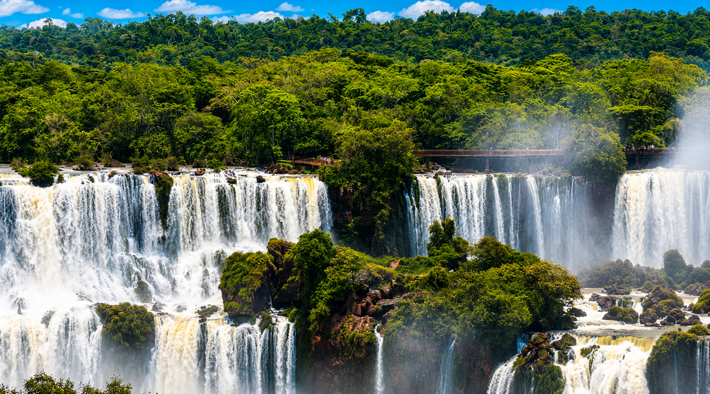

Brazilian Street Food Tour
Discover the flavors of Brazil on a guided street food tour in Balneário Camboriú. Taste iconic snacks, sip on fresh tropical juices, and learn about Brazilian food culture.
Discover the flavors of Brazil on a guided street food tour in Balneário Camboriú. Taste iconic snacks, sip on fresh tropical juices, and learn about Brazilian food culture.

Discover Balneário Camboriú on a guided private tour. Ride the Parque Unipraias cable car, enjoy a beachside lunch, and experience the FG Big Wheel.

Explore the stunning beaches of Balneário Camboriú on this half-day scenic tour. Discover Praia Brava, known for its clean waters and chic vibe, and enjoy breathtaking ocean views along the iconic Estrada da Rainha.

Discover the best of Balneário Camboriú in one day with marine life at the Oceanic Aquarium, authentic NASA exhibits, a great lunch, and a relaxing coffee break.

1 Tour Available

Experience Rio de Janeiro's highlights in one unforgettable day, featuring iconic beaches, vibrant street art, and visits to the Museu do Amanhã and Centro Cultural Banco do Brasil. Enjoy local flavors while discovering the city's rich culture, history, and stunning waterfront views.

1 Tour Available
Experience the best of Iguazú Falls in one unforgettable day, exploring both the Argentine and Brazilian sides for breathtaking panoramic views and immersive rainforest trails. Complete your adventure with a visit to the Triple Frontier and a traditional Argentine lunch.
Connect
Follow Along
Stay up to date with our latest music, travels, and behind-the-scenes moments.